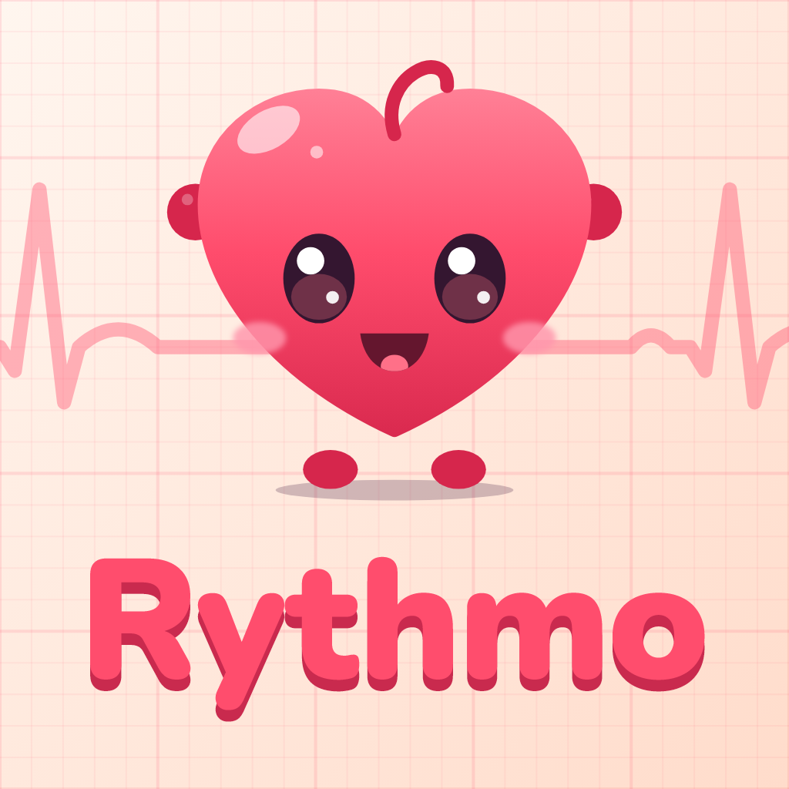

Rythmo
EKG ritimlerini oyun gibi öğren · Learn ECG rhythms like a game
Destek
Rythmo; paramedikler, hemşireler ve sağlık öğrencileri için EKG ritimlerini önce öğreten, sonra soran kısa derslerden oluşur. 23 ritim, canlı monitör şeritleri, vaka soruları, alıştırma turları ve sıralama içerir.
Pro üyeliğimi yeni telefonuma nasıl taşırım?
Aynı Apple kimliğiyle giriş yapın, Profil > Rythmo Pro ekranında "Satın alımları geri yükle"ye dokunun.
Aboneliğimi nasıl iptal ederim?
iPhone'da Ayarlar > [adınız] > Abonelikler > Rythmo. İptal, dönem bitiminden en az 24 saat önce yapılmalıdır.
Verilerimi nasıl silerim?
Profil > "İlerlemeyi ve sıralama kaydımı sil". Ayrıntılar için Gizlilik Politikası.
Hatırlatmaları nasıl kapatırım?
Profil > Ayarlar > Günlük hatırlatma.
İletişim
Soru, hata bildirimi ve öneriler için: GitHub üzerinden iletişim.
Rythmo yalnızca eğitim amaçlıdır. Gerçek hastada karar ve uygulama için güncel ACLS ve ulusal kılavuzlar ile yetkili hekim talimatı esastır.
Support
Rythmo is a set of short lessons for paramedics, nurses and healthcare students that teaches each ECG rhythm first and quizzes you after. It covers 23 rhythms with live monitor strips, case questions, practice rounds and leaderboards.
How do I move Pro to a new phone?
Sign in with the same Apple ID, then tap "Restore purchases" on the Profile > Rythmo Pro screen.
How do I cancel my subscription?
On iPhone: Settings > [your name] > Subscriptions > Rythmo. Cancel at least 24 hours before the end of the current period.
How do I delete my data?
Profile > "Delete my progress and leaderboard entry". See the Privacy Policy for details.
How do I turn off reminders?
Profile > Settings > Daily reminder.
Contact
Questions, bug reports and suggestions: contact us on GitHub.
Rythmo is for education only. In real patients, decisions and treatment follow current ACLS and national guidelines and the responsible physician.